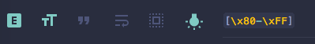

How to fix TeXcount !!! File/text was not valid utf8 encoded. !!! warning
March 3, 2017
In the process of writing my thesis which I have now handed in, I had to quite often check that I was not exceeding the word limit by running the following command:
texcount thesis.tex -inc -nosubAnd each time, I would get the following warning:
!!! File/text was not valid utf8 encoded. !!!
It was not until one of my supervisors noticed that something was causing strange artefacts to appear in the compiled PDF document in the feedback stage that I realised that it was to do with the Unicode characters hiding in the literature review chapter when I was copying block citation quotes from other publications. I was obviously not going to look through an entire chapter for Unicode characters so here is how I automated the process:
- Open a text editor that supports regex based search, for example: Sublime text.
- Enable regex and case sensitivity and search for
[\x80-\xFF]as shown in the image below. This excludes all the ASCII characters whichtexcountdoes not have any issues with.

Now you can deal with the found characters on a case by case basis. There is usually a $\rm\LaTeX$ representation of the Unicode characters if you actually need them which you can Google for yourself.